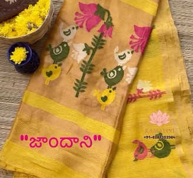
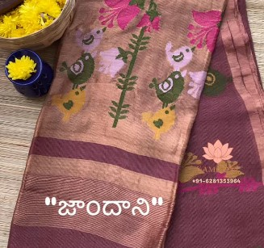
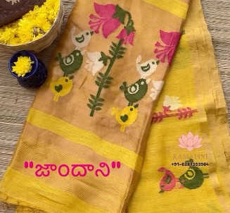
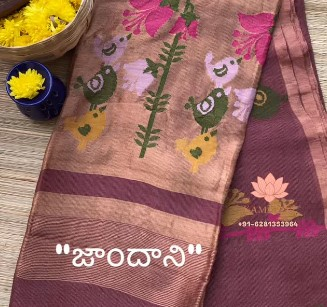

Jamdani
Intro & History: Jamdani, often called "woven air", is one of the most exquisite and ancient handloom techniques from Bengal (now Bangladesh and West Bengal). Its origins trace back over 2,000 years to the fine muslins of Dhaka, reaching its peak during the Mughal era when it was prized by royalty. Recognized by UNESCO as Intangible Cultural Heritage of Humanity, Jamdani survived colonial suppression and remains a living art form.
Significance & Work: True Jamdani is created using discontinuous supplementary weft technique on a simple loom — artisans interlace delicate patterns (floral, geometric, or paisley motifs) by hand while weaving the base fabric, without any mechanical aids. The result is an incredibly lightweight, translucent saree with motifs that appear to float on both sides. It symbolizes Bengali refinement, resilience, and unparalleled craftsmanship — worn for weddings, Durga Puja, and special occasions as a mark of cultural pride and timeless beauty.
 


